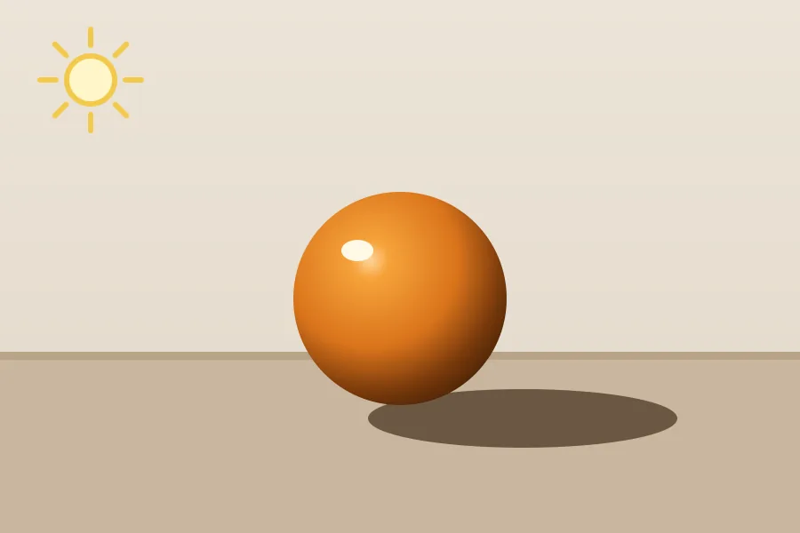
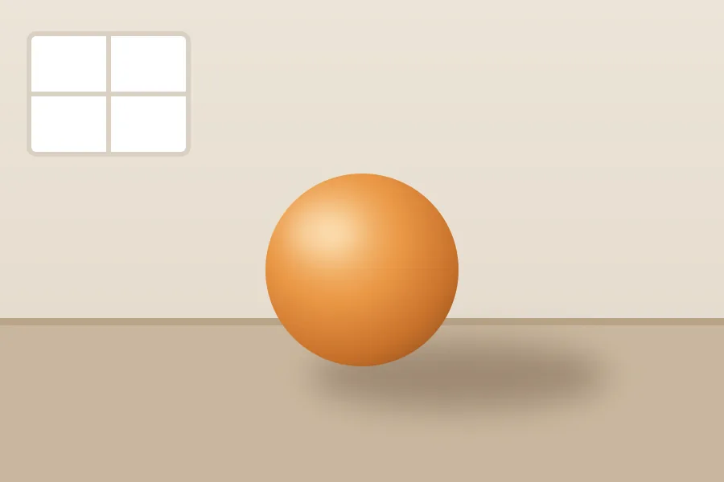
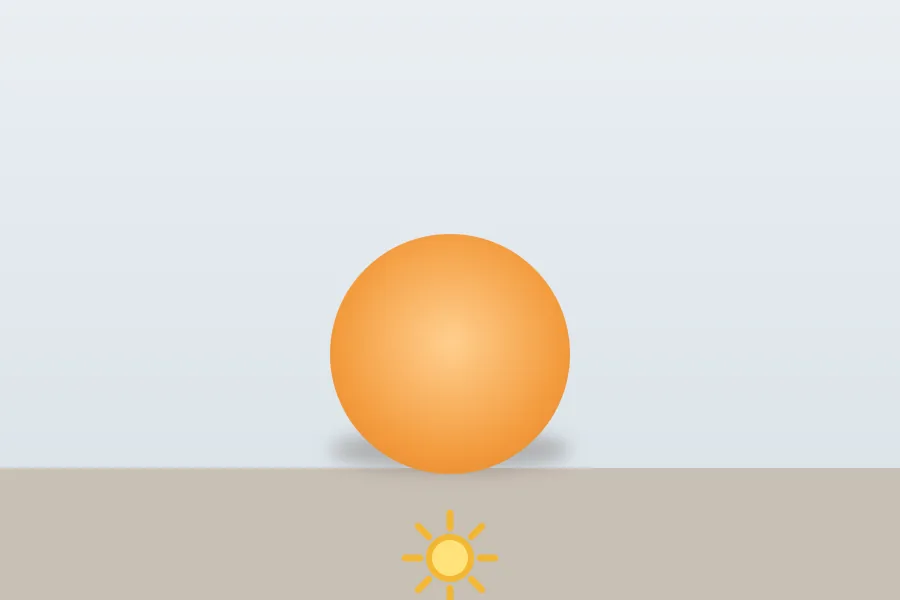
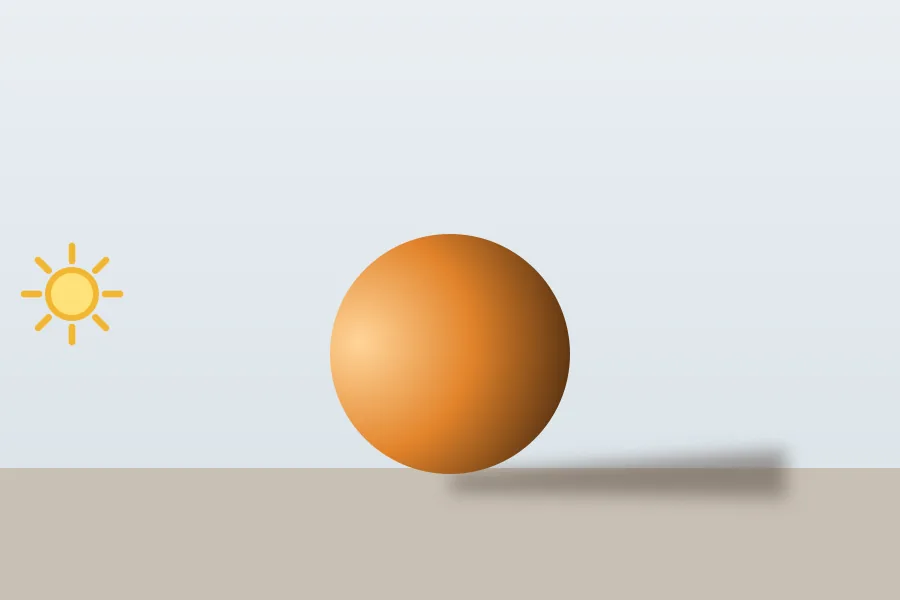
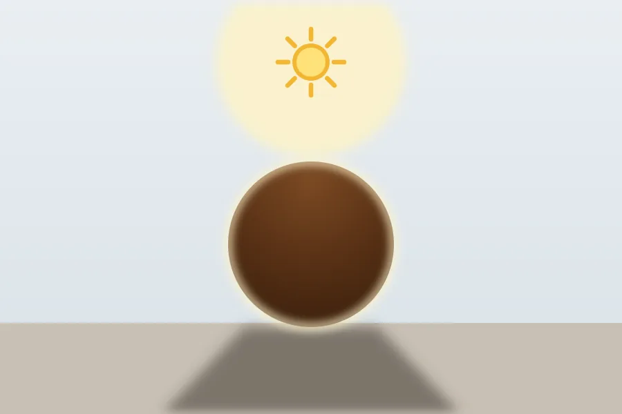
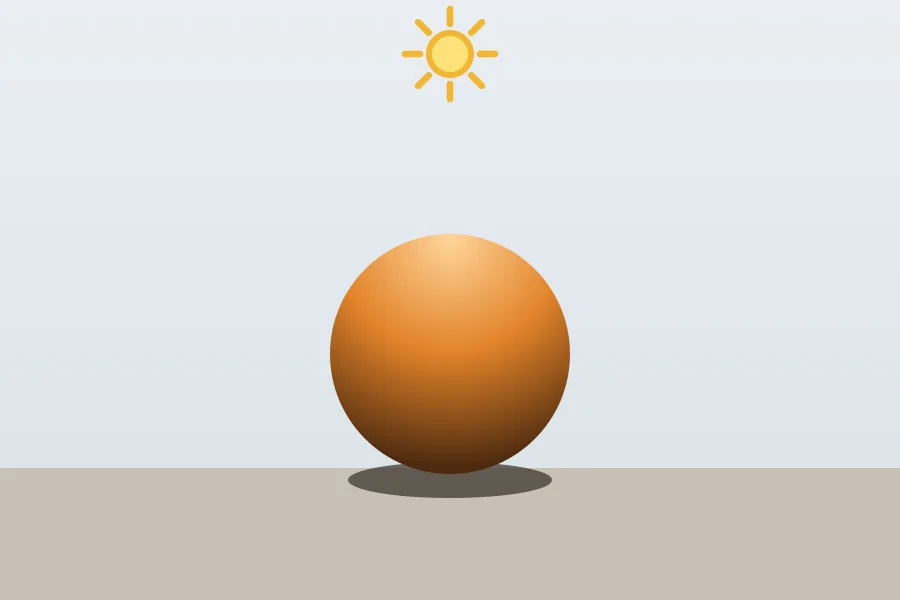

Chapter 4 was about the colour of light. This one is about its shape. Two things matter most, how hard or soft the light is and which direction it comes from. Learn to read both and you’ll start choosing the time and place for a photo by its light, not just by its subject.
Hard and soft light


Hard light comes from a small, bright source, like the midday sun on a clear day or a bare bulb. Its shadows have crisp edges and the contrast is high. Textures jump out, and so do wrinkles and blemishes.
Soft light comes from a large source, or from light that has been spread out. An overcast sky turns the whole sky into one huge lamp, and a big north-facing window does the same indoors. Shadows fade gently from dark to light, and faces look smooth and even.
What counts is the size of the source as the subject sees it. The sun is enormous, but it’s so far away that it acts like a tiny point. Move a lamp closer to a face and its light gets softer, because it now looks bigger from the face’s point of view. Move it away and the light hardens again.
Which way the light falls




Front light comes from behind the camera and falls straight onto the subject. Colours look bright and clean, but the shadows hide behind the subject, so the picture can look flat. It suits bold colours and graphic shapes.
Side light comes from roughly ninety degrees to one side. Half the subject is lit and half falls into shadow, which shows shape and texture better than any other direction. Low evening sun raking across a field is the classic example, and so is a window beside a face.
Back light comes from behind the subject towards the camera. It outlines hair and leaves with a glowing rim and makes petals light up from inside. Expose for the sky and you get a silhouette. Add a little exposure if you want the front of the subject to keep its detail, and watch out for flare.
Light from straight above, like the sun at midday, is the least flattering for people. It drops dark shadows into the eye sockets and under the nose. If you have to shoot at noon, look for open shade, or turn the person so the light reaches them from one side.
The golden hour and the blue hour
The hour after sunrise and the hour before sunset are called the golden hour. The sun is low, so the light is warm and comes in from the side, and shadows stretch out long. It’s the easiest time of day to make almost anything look good. The blue hour follows sunset, when the sun has gone but the sky still glows deep blue. Weather and planning apps show both times for any place and date.
Shaping light yourself
You don’t need a studio to control light. A white card or a cheap folding reflector bounces light back into the shadows. Hold it below a face and the dark patches under the eyes soften. A thin white curtain turns hard sunlight through a window into soft light. A black card on the shadow side does the opposite and deepens the shadows for a moodier look.
Fill flash
A small flash isn’t only for the dark. In bright sun, a touch of flash fills in harsh shadows on a face, or lifts a subject standing in front of a bright background. Most cameras have a flash exposure compensation setting. Turn it down to about −1 or −2 so the flash fills the shadows without looking like flash. Bouncing the flash off a white ceiling or wall makes the source bigger, and so the light gets softer.
Exercises
Exercises L1–L4. Tick each one off when you’ve tried it. Your ticks stay on this phone or computer.
- L1
Hard and soft
Photograph the same object, like a piece of fruit, on a sunny windowsill and again on a cloudy day or in shade. Compare the edges of the shadows and how much texture shows.
- L2
Walk around the light
With the sun low, photograph a friend or a statue four times as you walk around them, a quarter turn each time. Note how the shape and the mood change.
- L3
Golden hour
Photograph one place at midday and again in the golden hour. Lay the two pictures side by side.
- L4
Reflector
Photograph a face lit from one side by a window, first as it is and then with a white card bouncing light into the shadow side.
Photography Handbook, © 2026 Samskara Photo Club. Text and illustrations are licensed under CC BY-NC-SA 4.0. You may share and adapt them for non-commercial use if you credit the club and share your version under the same licence. Commercial use needs the club’s permission. The club logo is not covered by the licence.